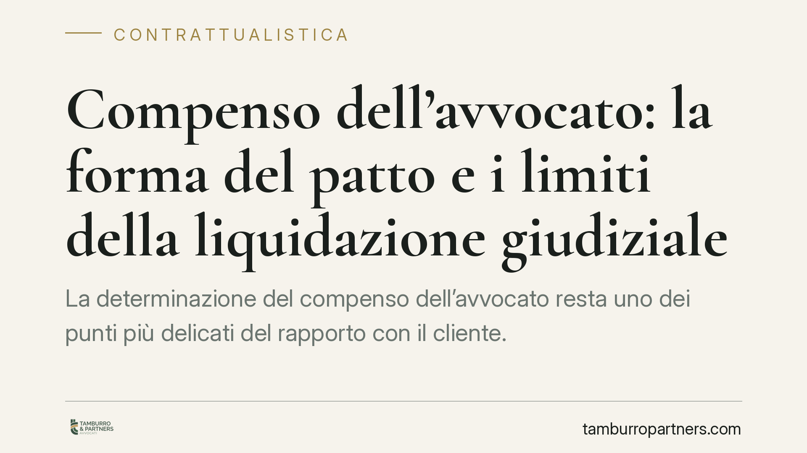

Compenso dell'avvocato: la forma del patto e i limiti della liquidazione giudiziale
La determinazione del compenso dell'avvocato resta uno dei punti più delicati del rapporto con il cliente. Tra regola generale del codice civile, riforma forense del 2012 e parametri ministeriali, l'assenza di un accordo formale non azzera il diritto al compenso ma lo affida a criteri legali. Vale la pena ricostruire il quadro con precisione, evitando le semplificazioni più diffuse.

Il fatto e una premessa di metodo
Il tema del compenso professionale torna periodicamente all'attenzione della giurisprudenza di legittimità. La domanda ricorrente è semplice: cosa accade quando manca un accordo scritto sul compenso tra avvocato e cliente?
Una precisazione preliminare è doverosa. Sulle pronunce in materia circola spesso una lettura imprecisa, secondo cui senza patto scritto l'avvocato non avrebbe diritto ad alcun compenso. Non è così. Per questo evitiamo di attribuire genericamente "alla Cassazione" un principio senza ancorarlo a una pronuncia identificabile: chi cita una decisione di legittimità dovrebbe sempre indicarne sezione, numero e anno. In mancanza di tale riferimento, è più corretto ricostruire il quadro normativo vigente.
Inquadramento normativo
La regola generale è contenuta nell'art. 2233 c.c., dedicato alle professioni intellettuali. Il comma 3, nella formulazione introdotta dall'art. 2, comma 2-bis, del D.L. 223/2006 (decreto Bersani), aveva previsto che i patti sul compenso conclusi tra avvocati e clienti fossero redatti in forma scritta a pena di nullità.
Quel comma è stato però abrogato dall'art. 9 del D.L. 1/2012. La materia del compenso forense va oggi letta alla luce della L. 247/2012 (nuovo ordinamento forense): l'art. 13 stabilisce che il compenso è di regola pattuito liberamente e in forma scritta, e l'art. 13, comma 5, impone all'avvocato di comunicare al cliente, di norma per iscritto e su richiesta, la prevedibile misura del costo della prestazione. La forma scritta del preventivo e dell'accordo assolve quindi una funzione di trasparenza e tutela del cliente, più che di nullità generalizzata del rapporto.
In assenza di accordo, l'art. 13, comma 6, rinvia ai parametri fissati con decreto ministeriale: oggi il D.M. 55/2014. Sono questi i criteri che il giudice applica quando deve liquidare il compenso non concordato.
Implicazioni pratiche
Il punto da fissare è duplice.
Per il cliente. L'accordo scritto, e in particolare il preventivo, è lo strumento che rende prevedibile l'esborso. La sua assenza non lo espone a un compenso libero e indeterminato: opera la rete di sicurezza dei parametri legali, entro cui il giudice si muove.
Per il professionista. L'eventuale invalidità o assenza del patto sul compenso non estingue il diritto a essere retribuito. In difetto di accordo valido, il compenso è liquidato per parametri ex D.M. 55/2014. È precisamente questo il senso dell'orientamento secondo cui il giudice non "surroga" il patto: la liquidazione giudiziale è uno strumento residuale, ancorato a criteri legali predeterminati, non un meccanismo per ricostruire ex post una pattuizione mai esistita o per sanare a piacimento l'assenza dell'accordo.
La distinzione è sostanziale. La liquidazione per parametri non equivale a riconoscere al professionista qualsiasi importo richiesto, né a negargli ogni compenso: colloca la determinazione entro forbici tariffarie verificabili, su cui il giudice motiva.
Cosa fare in concreto
Sul piano operativo, la prassi più prudente suggerisce alcune linee di condotta, qui esposte in forma generale.
- È opportuno che l'incarico sia accompagnato da un accordo o preventivo scritto, coerente con l'art. 13 L. 247/2012, che indichi criteri e prevedibile misura del compenso.
- È utile che il preventivo distingua le voci (attività giudiziale e stragiudiziale, spese, oneri) per ridurre il margine di contestazione.
- La documentazione delle attività svolte agevola, in caso di liquidazione, l'aggancio ai parametri del D.M. 55/2014.
- In presenza di clienti qualificati, come gli istituti bancari, la chiarezza preventiva sul costo resta raccomandabile a prescindere dalla forza contrattuale delle parti.
- La revisione periodica degli schemi di incarico alla luce delle evoluzioni normative e giurisprudenziali è una buona pratica gestionale.
Nota di metodo
Il messaggio da trattenere è che la forma scritta del patto sul compenso ha oggi una funzione di trasparenza e prova, non l'effetto automatico di azzerare il diritto del professionista. Quando l'accordo manca o non è valido, interviene la liquidazione per parametri: un esito legale e prevedibile, non una sanzione né un premio. Verificare di volta in volta il fondamento normativo applicabile, evitando di trasporre acriticamente principi maturati sotto la disciplina previgente, è parte essenziale di una valutazione corretta.
Contributo informativo a cura di Tamburro & Partners - Avv. Giuseppe Tamburro. Non costituisce parere legale.
Ogni contratto ha il suo equilibrio.
Se vuoi una revisione delle clausole o una redazione su misura, scrivi allo studio. Ti rispondiamo entro un giorno lavorativo.